Daily wage workers are hired at the naka by sight. Nothing records their skill, attendance or pay, so experience counts for nothing and wages go missing.
What I designed
ULS, a service for the naka: a QR-linked ID card, paper and SMS sign-up, a worker app, a Hindi app for foremen and a dashboard for contractors, run by a coordinator on the ground.
Where it landed
A complete service prototype: research models, a service blueprint, the screens for every role, a 20-frame storyboard and a teaser film.
Context
Every morning, daily wage workers gather at a naka, a roadside corner, and wait for contractors to pick them for a day’s construction work. There is no system: it is fast, verbal and run on who you know.
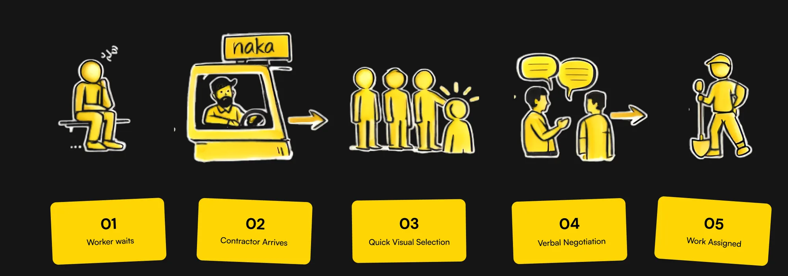
Fixing that meant understanding everything around the naka first, not just the moment of hiring.
The ecosystem
The worker sits at the centre of a much larger system.
We mapped every force acting on a daily wage worker, from the people at the naka out to policy, the economy and the city itself.
Family, fellow workers, contractors, foremen and the naka itself shape every working day.
Further out
Payment systems, government platforms, NGOs, transport and housing decide what is even possible.
What we saw
Power sits at the naka, with contractors and middlemen. The outer layers, like schemes and policy, rarely reach it, so each layer works on its own.
So we went to the people at the centre of it.
Research
We talked to them at the naka and on site.
In-depth interviews with workers, contractors and workers’ families, plus reports, schemes and news on informal labour. Three things came up in every interview: the naka is a broken way to find work, skill cannot be proved, and whoever pays holds the power.
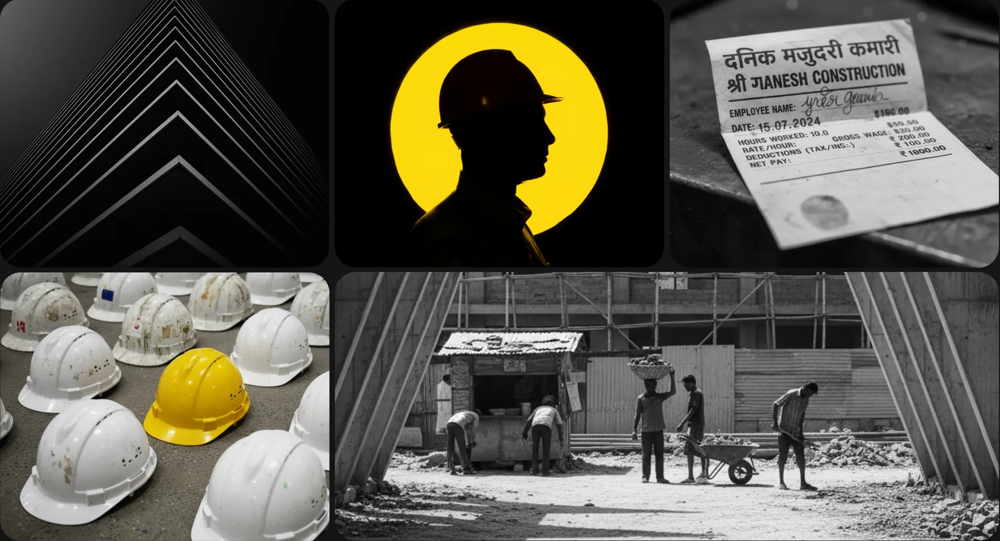
9interviews, on site at nakas and construction sites
Alongside the interviews we read government reports and the news. The government already runs schemes for informal workers: e-Shram registration, accident insurance, pensions. But signing up needs help most workers don’t have, and none of it is linked to a day’s work at the naka.
30 cr+workers registered on e-Shram, the government’s worker registry, but inactive. Source
60%unaware of the schemes or confused by them. Source
The interviews gave us five people, each living the same morning differently.
Personas
Five people, one naka.
We designed for urban naka workers first: migrant and local, skilled and unskilled, most with a basic phone or none. Then for the contractors who hire them and the supervisors and foremen in between. Each persona is drawn from the interviews, in their own words.
“Kaun milega aaj, pata hi nahi hota. Planning karna mushkil hai.”
I never know who I’ll get today. Planning is hard.
Needs
Verified information about a worker’s skills before hiring
Faster ways to find available workers without going to the naka
Reliability signals, to trust workers with ongoing work
Goals
Projects finished on time, without labour delays
Reliable workers found quickly, with less hiring effort each day
No wrong-skill hires and no accidents on site
Behaviour
Mixes known workers with naka hiring
Keeps his own worker lists through contacts and WhatsApp
Open to digital tools if they are practical and widely used
Pain points
Loses a lot of every morning searching for workers
Has hired workers who lied about their skills
Loses good workers to slightly better-paying contractors without notice
Technology
On a smartphone and WhatsApp all day
Will adopt a tool only if it saves time and cuts uncertainty
Yuvraj Mali, 45Site supervisor
“Foreman hata diya toh worker ko zyada milega, par system hi nahi hai uske liye.”
Take the foreman out and the worker would earn more, but there’s no system for that.
Needs
Tools to track and coordinate workers
Direct access to workers without going through informal networks
Systems that reduce risk and make people accountable
Goals
Smoother coordination without leaning on middlemen
Lower costs while keeping workers available when needed
Better control of safety and accountability on site
Behaviour
Coordinates through calls and informal networks
Keeps handwritten records
Open to changes that make him more efficient
Pain points
Delays when workers arrive late or don’t show up
Responsible for safety without control over how workers behave
No proper records; everything is tracked by hand
Technology
A mix of digital tools and paper
Prefers systems that don’t need workers to be digitally skilled
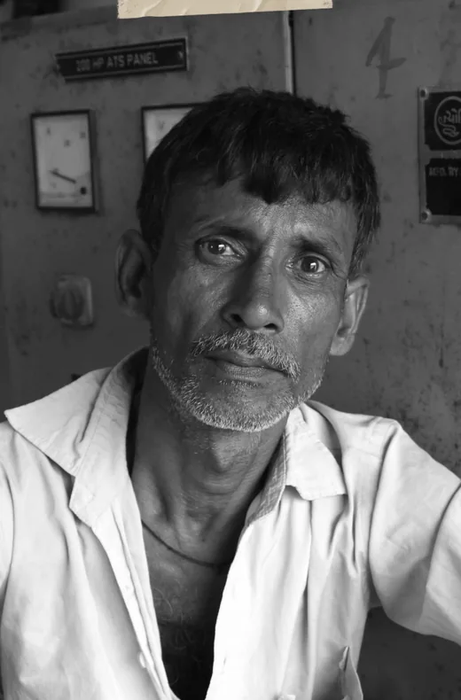
Mustafa Sheikh, 35Foreman · the middleman between both sides
“Dono taraf ka kaam mere through hi hota hai… par jab kuch galat hota hai toh blame bhi mujhe hi milta hai.”
Both sides’ work goes through me… but when something goes wrong, I’m the one who’s blamed.
Needs
A way to allocate workers without relying only on memory and contacts
Support in carrying responsibility between workers and contractors
Recognition as a legitimate role, not just a commission-taker
Goals
Strong relationships on both sides, so work keeps flowing
To earn through coordination and be seen as reliable
To avoid conflicts that could damage his network
Behaviour
Favours workers he knows or trusts, to reduce his own risk
Adjusts what he tells each side, about demand or wages, to manage expectations
Keeps every record in his head: who worked where, who can be trusted
Pain points
Blamed by both sides when something goes wrong
All responsibility, no formal authority or protection
Lives on an informal commission, so there is constant pressure and mistrust
Technology
Calls and WhatsApp; no structured system
Open to tools that simplify coordination, not ones that replace him
Put side by side, their goals pull against each other.
Empathy square
Everyone wants something different from the same morning.
The empathy square maps the concerns, constraints and intent of every party at once: the worker who provides labour, the contractor who hires, the foreman who mediates, and the government and NGOs who regulate.
Each party works towards its own ends, so the naka runs on friction instead of collaboration.
Trust through people
Trust comes from intermediaries, not from the system, so everything depends on them.
Speed or access
Digital platforms are efficient but shut out workers who can’t read or use apps; the physical naka includes them but is slow.
Nobody sees the whole
No one can see demand and supply together, so the worker carries the most risk with the least control.
To see where it breaks, we followed each of them through a real job.
The worker’s journey
Every morning is a gamble, and every stage after it.
The worker’s journey through one project, from choosing a naka to the last day on site. On the right of each stage are the problems that hit him there.
StageWhere it breaks
Choose a nakaWakes at 4 AM and pays for transport before earning anything.
No idea if there is work today
WaitStands with hundreds of others, trying to be seen.
2+ hours, unpaid
Get pickedChosen in seconds; the wage agreed out loud.
Skill goes unseenCaste and gender decideA middleman decides
First daysProves himself; asks nothing.
Insurance and site rules unclear
Settle inLearns the site, makes friends who know other contractors.
New skills go unrecorded
Steady workCalled by name now, not picked at the naka.
Get paidCash at month end, counted from the foreman’s register.
Pay leaves no proofThe foreman’s cut is invisible
Project endsAsks around for the next site.
No confirmed next job
After“I’ll call you for the next one.”
Months of trust leave no trace
The journey maps
For the worker, the contractor and the foreman: what happens at each stage, how it feels, what they think, where it hurts, what they have to decide, and where a service could help.
Choose a journey
Drag sideways to see every stage
Stage
01Pre-arrival
02Waiting at the naka
03Selection
04First days on site
05Settling in
06Stability
07Paid, trusted
08Project ending
09The last day and after
What happens
Decides which naka to go to by word of mouth. Wakes at 4 AM and spends ₹20 on transport, or walks, before earning anything. No idea if contractors will come today.
Stands with hundreds of others. Contractors drive up and scan the crowd. He positions himself to be seen. Every minute without selection is income lost.
A contractor calls out a number of workers, picking on familiarity, fitness and caste. A wage is agreed out loud. If he isn’t picked by 8 AM, the day is over.
Arrives early to prove he is reliable. Attendance goes in a register or an Aadhaar scan. The foreman watches who works and who complains. Insurance and site rules are unclear.
Learns the rhythm of the site: shift timings, breaks, which foreman to ask for what. Co-workers become a support network. He starts to feel less replaceable.
Routine work. Called directly by name, not through the naka. The contractor trusts him; he knows the site and what’s expected. The steadiest part of his year.
Month-end cash payment, worked out from the attendance register at the agreed daily wage. This contractor pays correctly, but he has no copy of the record.
The project is wrapping up. He asks co-workers about other sites. The contractor mentions “another project”, but nothing is confirmed. Uncertainty returns.
Final payment. “I’ll call you for the next one.” No written reference, no record of three months of reliable work. He goes home and waits.
Touchpoints
Peer calls about which naka has work; WhatsApp job tips; the auto driver for the route.
Talking with other workers, building a network on the naka ground.
Face-to-face wage talk; a hand signal or call-out; a verbal agreement; shared transport to the site.
Foreman marks attendance; foreman assigns tasks; co-workers explain the site rules.
Co-workers guide him on work and tools; the foreman’s feedback on his performance.
None recorded
Cash from the contractor; the foreman checks the register; workers compare wages.
Co-workers trade leads for the next job; he asks the contractor about future work.
The contractor’s word about a future job; peers’ calls about other nakas.
Emotional arc
Feeling
“If I’m late even 10 minutes I lose my spot.”
“Two hours gone. What if nobody comes today?”
“₹350 is less than I wanted, but I can’t say no.”
“Don’t be absent. Don’t complain. Just show up.”
“The foreman knows my name now. That’s good.”
“At least I know I have work this month.”
“He paid exactly what he said. I trust him.”
“He mentioned another project, but nothing is confirmed.”
“He said he’ll call. I hope he means it this time.”
Thinking
I have to spend money on this, not knowing if I’ll even get a chance.
So many people here. Will I get a chance, or walk home empty-handed?
Selected, finally. Now I can earn and feed my family.
Is my insurance active? What if I get hurt? Who do I ask without seeming like trouble?
Which co-workers know other contractors? Who should I be friendly with?
If I stay consistent he’ll call me for the next project. No weekend work that could risk it.
I wish I had a copy of this record. If something goes wrong next month, I have no proof.
Should I ask directly, or will that seem desperate? What if he gives my spot to someone else?
Three months of work and nothing to show a new contractor. How do I prove I’m reliable?
Pain points
Transport paid upfront, no demand information, no guarantee of work.
2+ hours of unpaid waiting; selection by bias, caste and body type.
No bargaining power, no written agreement, the day lost if not picked.
No onboarding, unclear insurance, unwritten rules, injury risk from day one.
Knowledge only through peers; no formal recognition of skill; still has to stay quiet.
The project has a fixed end; his skill isn’t recorded; no written contract.
Records held only by the contractor; no copy for him; wage history not portable.
No confirmed next project; asking feels risky; peers compete for the same lead.
No portable record; the relationship lives in the contractor’s phone; three months of trust invisible.
Decisions
Which naka today? Leave early or risk being late?
Stand close or look desperate? Approach a contractor or wait?
Take the wage offered, or push and risk the day?
Ask about insurance or seem like trouble? Report a small injury or hide it?
Push for a better wage or protect the relationship? Take side work or stay loyal?
Save, or send money home now? Ask for an advance or risk the trust?
Ask for a copy of the record or not push it? Raise a small difference or absorb it?
Ask about the next project now or wait? Go back to the naka now or hold out?
Wait for the call or go to the naka? Ask for a reference or seem demanding?
Opportunities
A demand signal before he travels; less transport risk.
Contractor reputation visible; his skill profile surfaced.
The verbal wage recorded simply; less bias in selection.
Insurance activated at onboarding; site rules told clearly.
Skill recognised as tenure builds; a safe channel for site issues.
A worker-held skill and attendance record; insurance made easy to use.
He gets his own payment record; wage history he can carry.
A project-close signal that starts the next steps; easy contractor-to-contractor referral.
A portable work record at project close; a verified reference he can carry.
Stage
01Demand planning
02Labour sourcing
03Selection and hiring
04Work execution
05Monitoring and adjusting
06Payment and settlement
07Future work
What happens
Decides how many workers, and of what kind, he needs tomorrow, from a mental estimate with no data. Calls the foreman on WhatsApp for familiar workers.
Drives 20-45 minutes to a naka with no idea who will be there or which skills. Some mornings the shuttering workers he needs just aren’t there.
Scans the crowd in two minutes and picks on appearance, familiarity and past hires. Agrees a wage out loud. No profile, no skill check: the first day is always a blind test.
Watches how the workers perform. “If he says he’s a mason and isn’t, I bear the liability.” The site supervisor keeps attendance in a handwritten register.
The project is running. He calls known workers directly for extra days and leans on the foreman to manage the group. No dashboard, no view across sites.
At month end he totals the foreman’s register and pays the foreman in bulk. The foreman takes his commission before workers are paid. He has no record per worker.
“I’ll call you for the next one.” Workers stay as numbers in his phone. No record, no rating: a 2-year relationship ends with nothing written down.
Touchpoints
Calls the foreman with the requirement; messages known workers to check who’s free.
The naka ground itself.
Face-to-face wage negotiation; a verbal job confirmation.
The supervisor marks attendance, gives tasks out loud and feeds back on performance.
Calls and WhatsApp with the supervisor for progress; feeds data into sheets for upper management.
Cash handed out by the supervisor or contractor; register entries for attendance and wages.
A phone call promising future work; an informal word-of-mouth reference.
Emotional arc
Feeling
“I’ll just go and see who’s there.”
“I need 3 shuttering workers. Will they be there?”
“I picked the best I could see.”
“Is he really an electrician?”
“The project is moving.”
“I call them every day. No guarantee.”
“He just stopped coming. No message.”
Thinking
How many do I need tomorrow? Naka or foreman? I have nothing to base this on.
Will skilled workers be there? From October to January everyone competes for the same pool, and prices spike.
I can’t verify skill in two minutes. I’ll watch the first day. If they lied, I carry the risk.
The right people need to be on the right tasks. An accident from a skill mismatch is on me.
I trusted this worker for 2 years. If he leaves without notice, my project is disrupted.
I have no record of what each worker was paid. The foreman handles it. I just trust the total.
Good workers I find can’t prove their value to the next contractor. My reference means nothing.
Pain points
No demand data. Planning is guesswork; he may over- or under-hire.
30-45 minutes wasted if the skill isn’t there; no view of the pool in advance.
Liability for misrepresented skill; no profile, no history; an expensive blind test.
No onboarding, site rules not told, injury liability with no insurance on record.
Workers vanish without warning and timelines slip. “He trusted me for 2 years, then just gone.”
No individual payment records; if the foreman is corrupt, he can’t check.
No portable skill record to give workers; no way to keep good ones for the next project.
Decisions
Go to the naka himself or call the foreman? Over-hire to be safe, or risk being short?
Wait longer for the right skill or take whoever is there? Pay the scarcity premium or push back?
Trust the worker’s claim or test him on day one? Take an unknown face or go short-staffed?
Report a skill mismatch formally or absorb it? Push the worker harder or reassign and lose time?
Replace a missing worker at once or wait? Tell the client about the gap or manage it quietly?
Trust the foreman’s total or try to verify it, with no tool to do so?
Call this worker again or find someone cheaper? Give a verbal reference or say nothing?
Opportunities
A simple planning tool: log the skills needed and get an availability signal before committing.
A live naka signal of which skills are available today, before he travels.
A worker skill card showing verified skills and past ratings.
An onboarding checklist: site rules, insurance and skill assignment at the start.
A continuity signal: a notification when a trusted worker is absent.
A payment breakdown per worker for him, and a confirmation each worker can keep.
A close-out record he signs: attendance and performance, carried to the next naka.
Stage
01Demand received
02Worker sourcing
03Hiring and selection
04Dispatch to site
05Payment handling
06Conflict and continuity
What happens
The contractor calls: “12 workers tomorrow, 8 masons, 4 helpers.” He checks his mental list of workers and calls them one by one, with no way to confirm.
Calls workers in his network. If there aren’t enough, other nakas, or migrants from UP and Bihar with a 4-7 day lead time. He won’t know who is really available until morning.
At the naka he decides which workers go to which contractor. Workers can’t see how he chooses; they depend entirely on him.
Sends the selected workers to the site as a group and makes sure the numbers add up. After that, his involvement drops off.
The contractor pays him in bulk. He takes a commission from both sides. Nothing is written down, and workers never see the original amount.
Handles disputes, complaints and the next job, and keeps both sides happy. No formal authority: everything runs on personal trust.
Touchpoints
The contractor’s call with the requirement; his calls to workers; workers calling him asking for work.
Calls to other foremen; calls into the migrant network.
His verbal allocation to workers; their acceptance or refusal.
Directions to workers; transport arranged through the contractor; the contractor confirms arrival.
Cash from the contractor; workers asking him about their wages.
Calls to workers to line up the next job.
Emotional arc
Feeling
“I manage this. Everyone needs me.”
“Will I find 12 people by morning?”
“I decide who goes where.”
“If workers don’t reach, I’m answerable.”
“This is how the system works.”
“If I don’t manage both sides, I lose work.”
Thinking
Who from my list can I call tonight? What if they don’t pick up?
Migrant workers are cheaper but take 4-7 days. Local ones cost more. The contractor’s budget against the workers’ demands.
I put Ramesh with the contractor who pays better; he’ll stay loyal. The new one goes to the difficult contractor.
If they don’t reach the site, the contractor will blame me. Did I send the right people?
How much commission to take? This is normal. Should I tell the workers the full amount?
Both sides depend on me, and both blame me. If I take one side, I lose the other.
Pain points
No confirmation system. “I call them every day, no guarantee.”
Migration delays; no tool to track anyone; just calls and hope.
Allocation rests on his personal judgment alone: no transparency, no fairness check.
No check on who actually arrived: responsibility without control.
An invisible commission that workers don’t trust; no record, so disputes can’t be settled.
No formal authority; constant conflict; no system to back him; all the risk is his.
Decisions
Confirm to the contractor now or hedge? Local workers, or cheaper migrants?
Better rates for loyal workers or the same for all? Over-call to cover cancellations?
Which workers to which contractor? Explain his reasons or keep them hidden?
Call workers again to confirm, or trust their word? Replace no-shows fast or manage the gap?
Deduct fairly or make up for his own losses? Show the breakdown or keep it unclear?
Back the worker or the contractor? Escalate or handle it quietly?
Opportunities
A simple demand-and-supply tool on his phone; worker availability before he calls.
A portable skill and reliability record that takes the load off his memory.
A transparent allocation log, which protects him too.
A simple confirmation before dispatch, and an arrival check at the site.
A payment breakdown workers can see; a simple wage receipt.
A formal grievance channel beyond him; a recognised, legitimate role.
Following the value through those journeys shows where it leaks away, and who keeps it.
By choice or by chance?
The system lasts because someone gains from it.
The value flow traces money, labour, information and trust between everyone involved, and where each exchange breaks down.
Eight places where the value a worker creates leaks away before it reaches him.
Schemes that never arrive
e-Shram, PMSBY, PM-SYM and Jan Dhan all exist and are funded, but their value (a ₹2 lakh accident cover, pensions, welfare) never reaches workers. It sits in government systems as data.
Supply and demand that never match
Workers and contractors stand in the same place at the same time, but the match is made in two minutes by sight, not by skill. The right skill for the right site is lost to bias.
Skill nobody can see
Years of expertise live only in people’s heads. They can’t be proved, carried or paid for beyond the contractor who already knows the worker.
Platforms workers aren’t on
Urban Company, WorkIndia and Apna carry real hiring value, but they are built for smartphone users. Contractors are on them; workers mostly aren’t, so the loop never closes.
Labour with no record
Workers give labour, time and skill every day, but the only record is the contractor’s. The worker’s side of the exchange is invisible.
Money that leaves no trail
Cash is quick but leaves no receipt. A wage cut, a short payment or a ghost worker can never be disputed: the day’s value disappears once it’s paid.
A middleman who sells information
The foreman’s value comes from holding what both sides need, access to work and access to workers, and he takes a cut each way.
Trust that disappears
After three months on a project, the worker leaves with nothing to show the next contractor, and the contractor loses a good worker with no way to find him again.
Weighing what each role gets against what it pays gives the answer: the foreman produces no labour, yet keeps the most. The naka is not broken by chance.
Role
Gets
Pays
Worker
A day’s wage, peer tips on WhatsApp, the chance of a repeat call
Transport before earning, 2 unpaid hours of waiting, a verbal wage, rejection every day
Contractor
Labour the same morning, no commitment, full control of who is picked
30-45 minutes at the naka, skill risk, workers who vanish, a 10-15% foreman cut
Foreman
Commission from both sides, control over who meets whom, no accountability
Settling disputes, his reputation when workers don’t show
So could something that already exists fix it?
What already exists
Everything else is built for people with smartphones.
Job apps assume a profile and an app; government schemes register workers but never connect them to a day’s work. None of them work at the naka itself.
Platform
Same-day hiring
Works without a smartphone
Proof of wage and pay
Help on the ground
Schemes linked
WorkIndia, Apna, Job Hai
No
No
No
No
No
Urban Company
No
No
Yes
No
No
e-Shram (govt.)
No
No
No
No
Partly
MGNREGA (govt.)
No, rural work on demand
Yes
Yes
Yes
Partly
ULS
Yes
Yes
Yes
Yes
Yes
MGNREGA, the rural employment guarantee, comes closest: notified wages, payments to a bank account and a job card that records days worked. But it is rural only, limited to a set number of days a year, and does nothing for the city naka.
Which left one problem underneath all the others.
The problem
Nothing at the naka is ever written down.
Workers have no recorded identity, skills or work history, because labour, attendance and payments are never captured. So hiring runs on last-minute guesses, and both sides live with uncertainty, mistrust and disputes.
Skill
How might we make a worker’s skills and reliability visible beyond the people who already know them?
Demand
How might we show workers where the work is before they travel to a naka?
Payment
How might we give workers proof of their wage and payment, without asking cash-first contractors to change?
Coordination
How might we make it visible who is going where, across workers, contractors and sites?
Fairness
How might we reduce bias in selection without slowing the naka down?
Answering all five at once needed a service, not just an app.
The service
ULS organises the naka instead of replacing it.
ULS, the Urban Labour System, gives every worker a QR-linked ID card that carries their verified skills, attendance and payments. A coordinator at the naka matches workers to the jobs contractors post, and job details reach any phone by SMS. The foreman becomes the coordinator: a recognised role with a fixed, open fee instead of a hidden cut.
AccessA verified identity, with or without a smartphone
HiringWorkers matched to demand by skill, not picked by face
RecordsWages, attendance and work history, kept for the worker
The service blueprint
One job, from the night before to project end, following the worker, with what the coordinator, the contractor and the system do at each stage.
Every person gets the tool that fits how they already work: a card and a paper slip for workers without smartphones, an SMS for every phone, an app for those who have one, a Hindi app for the foreman and a dashboard for the contractor.
An ID card and a paper slip
Every worker gets a ULS card that links who they are to their record. New workers sign up at the naka on a paper slip that is digitised later.
Why: most workers have a basic phone or none, so the card and the slip come first and the app is optional.
Workers are grouped by job and taken to site together, each trip tied to a batch ID: who is on it, where it is going, when it arrives.
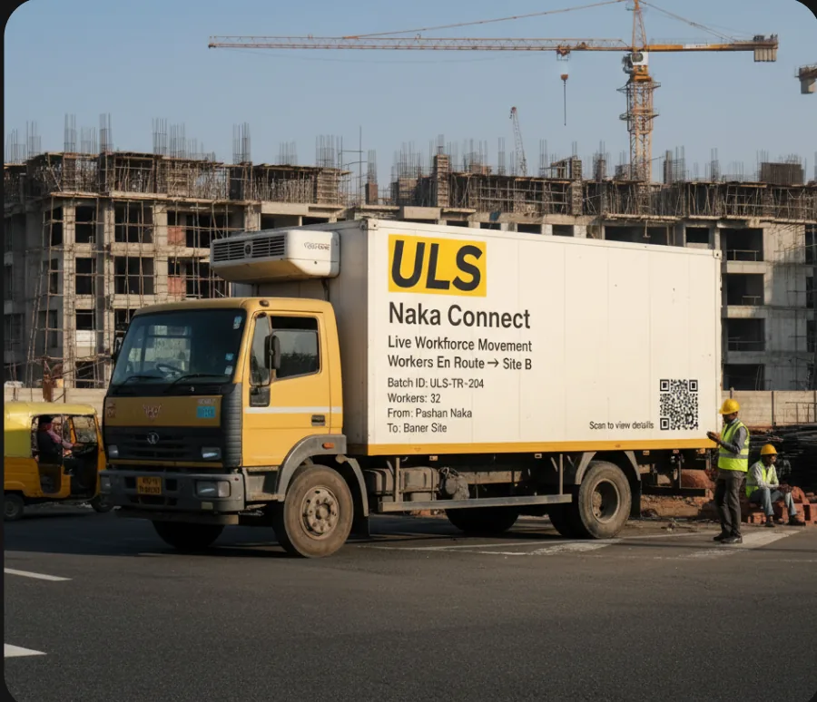
No service runs perfectly at a naka. So we planned for it failing.
When it fails
Every failure has a way back.
A service recovered well earns more trust than one that never failed. For each thing that can go wrong, we defined how it is caught and what fixes it for next time.
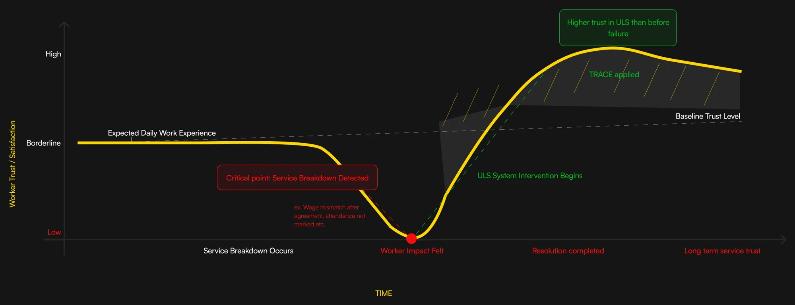
Worker trust through a failure: recovered well, it ends higher than before.
What goes wrong
How it is caught
Fixed now
Fixed for good
Worker registered wrongly
Coordinator flags the incomplete profile
Corrected with the worker on the spot
Required fields on the slip and app
Worker not scanned at the naka
Missing scan at check-in
Quick card or paper onboarding
Scan before entry, every time
Contractor hires off the system
Hire with no record is flagged
Redirected through the dashboard
Incentives for using it, penalties for not
Worker dropped at dispatch
Headcount does not match
Reassigned or regrouped
A dispatch confirmation step
Wrong skill for the task
Reported on site
Role changed or worker replaced
Better skill tagging
Attendance not marked
Missing log for the day
Foreman updates it by hand
Card check-in linked to wages
Wage changed verbally
Wage differs from the agreed one
Agreed wage reinstated
Wage terms locked in the system
Payment delayed or missing
Late payment flagged
Checked and paid
Every payment logged digitally
Here is the whole service, one morning before and after.
Before and after
The same morning, twice.
The storyboard follows Ramesh, a mason, Shailesh, a contractor, and Yuvraj, the foreman at the naka: first as things are today, then with ULS.
Before ULS
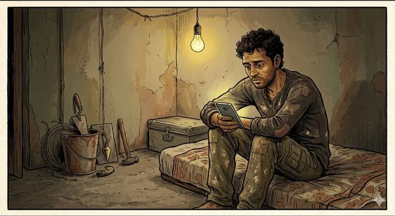
1
Ramesh wakes to no call. He does not know which naka has work today, and spends ₹20 on transport before earning a rupee.
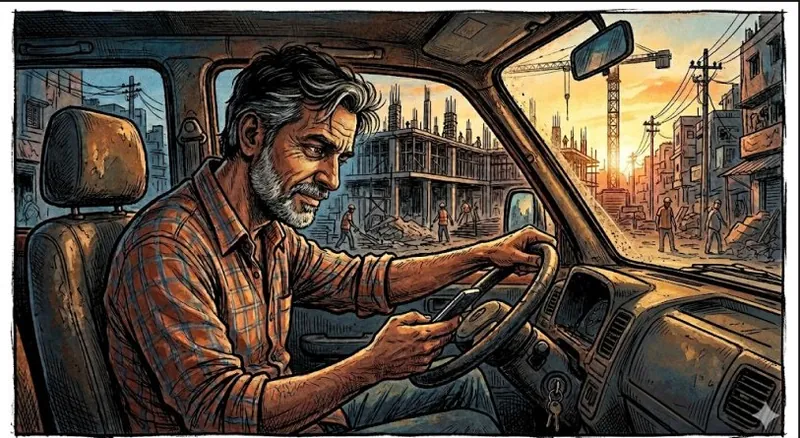
2
Shailesh, a contractor, needs 3 shuttering workers and 2 helpers by 8 AM. He messages six people and hears back from two.
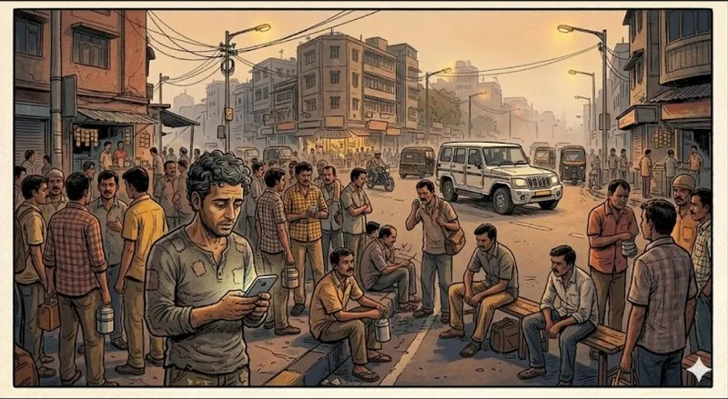
3
At the naka, a contractor scans 80 workers in 90 seconds and picks familiar faces. Ramesh’s 11 years count for nothing.
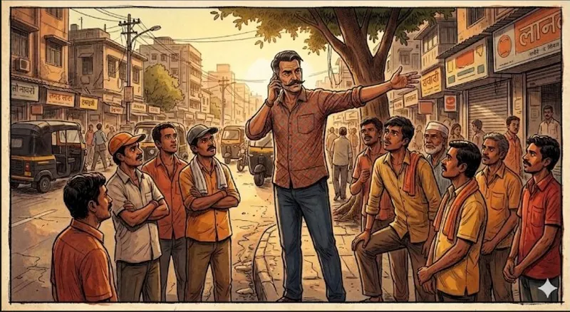
4
Yuvraj, the foreman, decides who goes where and takes a cut from both sides. Nobody knows how he chooses.
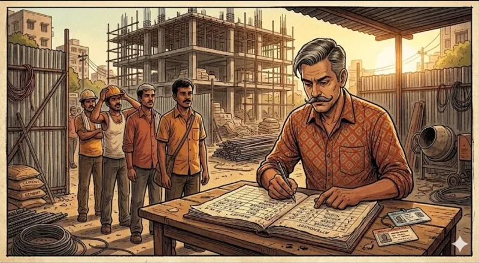
5
At the site, names go into a paper register. Nobody checks skills, so the “electrician” is not one.
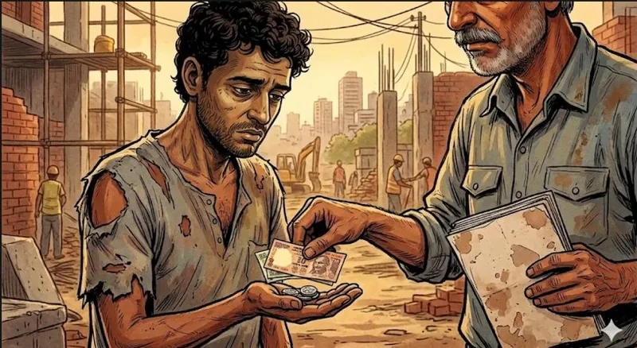
6
Ramesh worked 22 days. The register says 19. With no record of his own, he takes the loss.
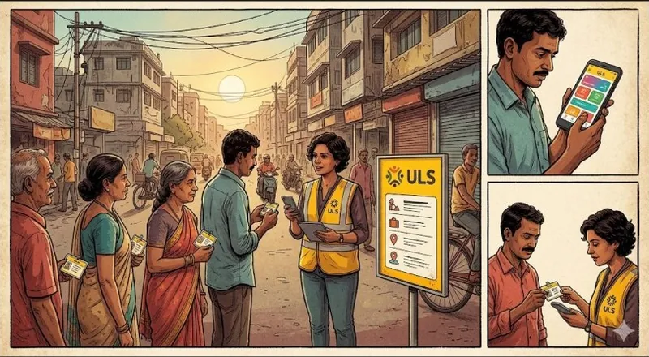
Introducing ULS, a service layer for the naka. The naka does not disappear. It gets organised.
With ULS
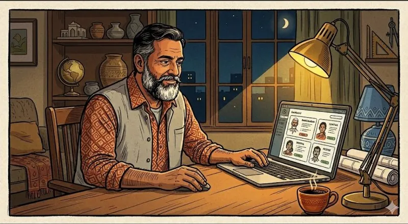
1
The night before, Shailesh posts what he needs: 3 masons, 2 helpers, ₹750 a day. The nearest naka sees it.
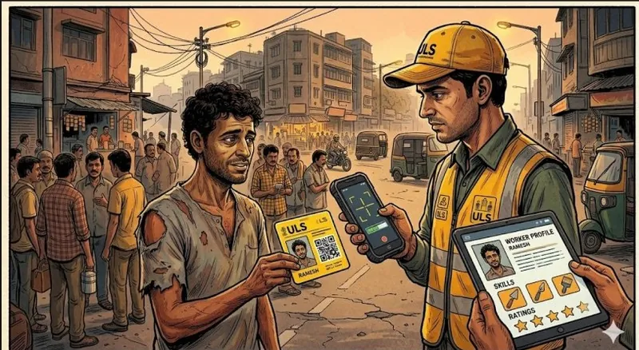
2
At the naka, the coordinator scans Ramesh’s card. His profile loads: mason, 11 years, 95% attendance, verified skills.
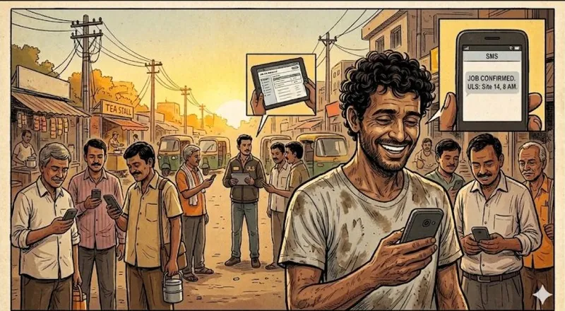
3
Ramesh is matched to the job and gets an SMS with the site, the time and the wage before he boards any transport.
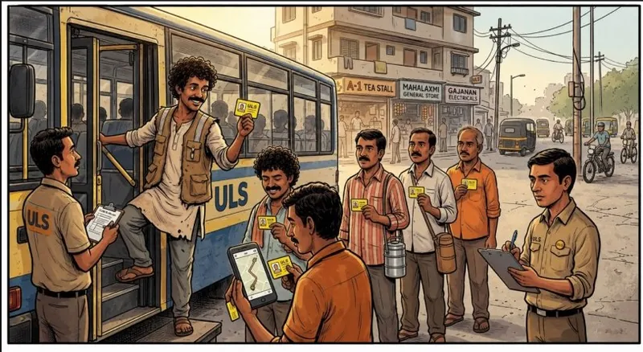
4
He boards a ULS bus with seven others. The app shows the batch, the vehicle and the arrival time.
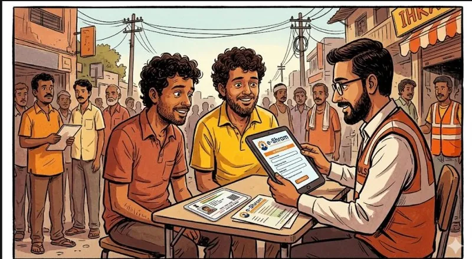
5
His e-Shram registration and his insurance are linked to his profile, where the contractor can see them.
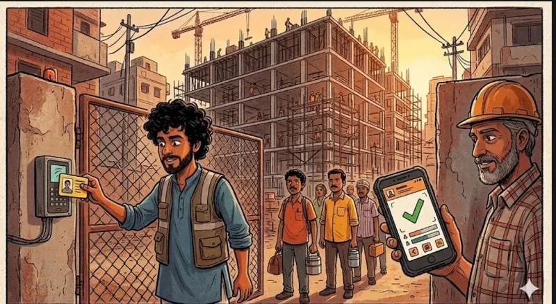
6
At the site gate he scans his card. The foreman’s app, in Hindi, marks him present at 7:00 AM.
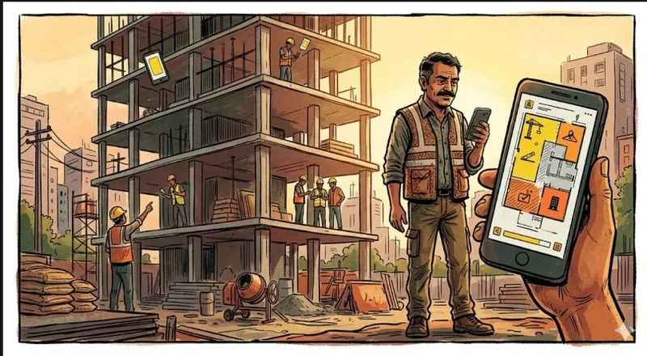
7
Yuvraj assigns Ramesh to masonry on Floor 1 with one tap.
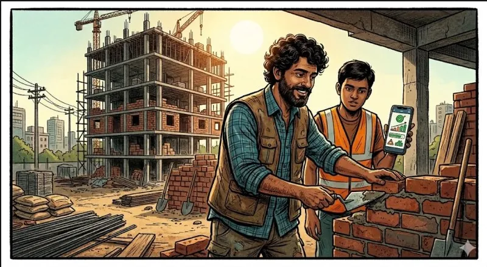
8
A co-worker vouches for Ramesh’s shuttering. The verified skill makes him eligible for a higher wage.
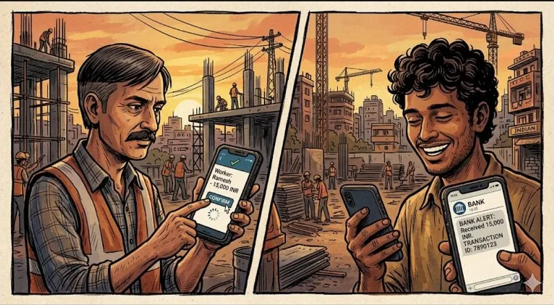
9
The foreman marks him paid. Ramesh gets an SMS: ₹15,000 credited. It is his first payment record.
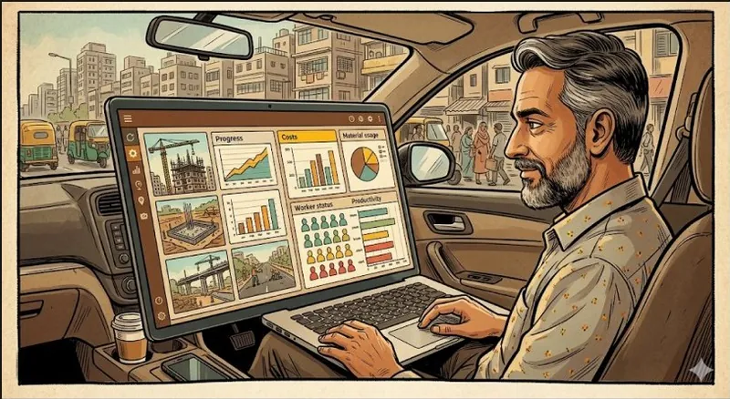
10
From his car, Shailesh sees three sites at once: who is present, what was paid, what each site costs.
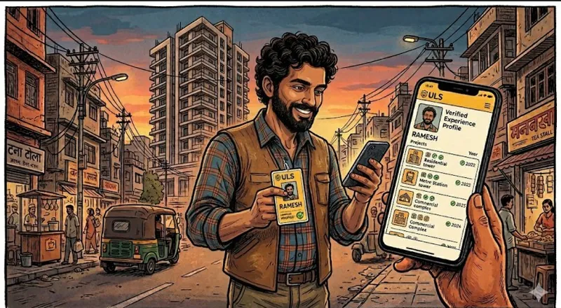
11
After 22 days, the job is on Ramesh’s profile: ₹16,500, full attendance, rated 4.8. The next contractor sees it all.
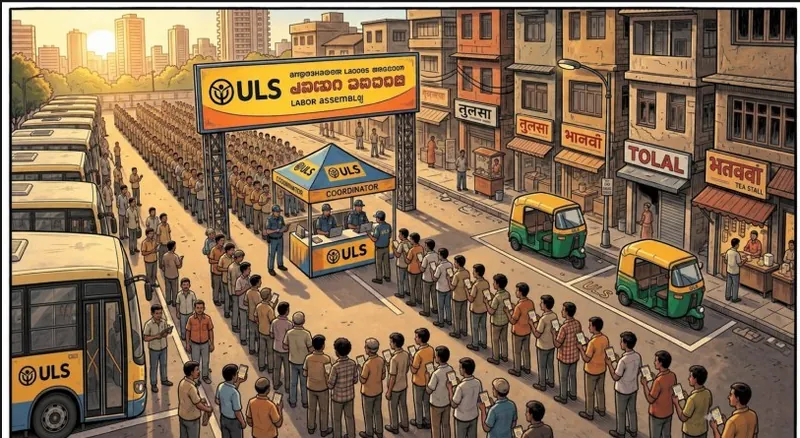
12
The same naka as frame 3 before ULS, now a coordinated pickup point. Still busy, but organised.
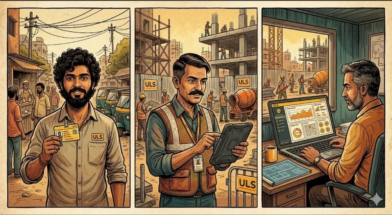
13
Ramesh has a record, Yuvraj runs his site from an app, and Shailesh plans the night before instead of guessing at 6 AM.
The teaser
We launched the service idea with a short film, as a first prototype of how ULS would feel.
0:00 / 0:23
Impact
The record is worth more with every job.
Right away
Less waiting at the naka, and a wage agreed in the open.
Over months
Each job adds to a work history, so trust grows and the right worker finds the right job.
Over years
An identity instead of anonymity, less depending on middlemen, and a system that can scale.
What I learnt
Visibility is power
Making skills, wages and work visible is not a feature. It moves fairness and decisions to the people who were left out.
Design the trust in
At the naka, trust lives in memory and relationships. A record the worker owns makes it part of the system.
Respect real limits
Low literacy, no time, no money to risk: the service has to work within these, not wait for people to change.
Physical and digital together reach more people
A card, a slip and an SMS reach people an app alone never would.